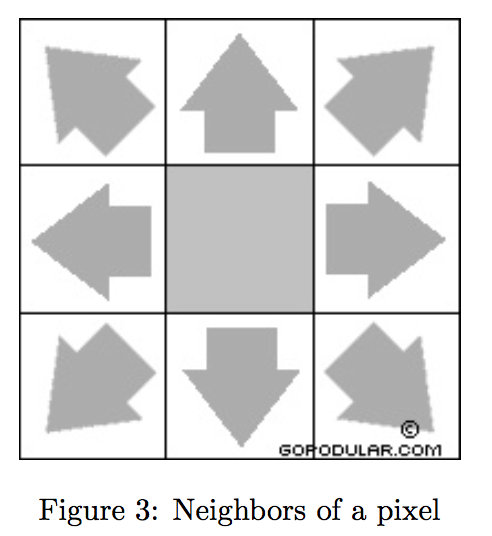

Project: Image Blocks
Due Date: July 23 Saturday 11:00PM
Assignment Type: Closed (See
Policy)
Overview
A binary digital image is a rectangular grid of black and white pixels. The image shown in Figure 1 consists of 17*9 pixels. In this project, you write a program to count the connected blocks in a binary digital image. For example: There are three connected blocks in Figure 2a, six connected blocks in Figure 2b, 14 connected blocks in Figure 2c, and one connected block in Figure 2d. If we count white blocks, there are two connected blocks in Figure 1.
Check out the project ImageBlocks. The “Picture” class in utils packge can read and show digital image files. You can also get the height, width of the image, and the color of each pixel on the image. The following code opens a image file, displays it, returns the height and width of the image, and the color of a pixel at grid position x,y.
Picture pic = new Picture(fileName);
pic.show();
height = pic.height();
width = pic.width();
Color t = pic.get(x, y);
In order to find a connected block, you find a black pixel, then you recursively visit all neighbors of the pixel to check if any neighbor is a black pixel too. Then you move to the neighbor, and repeat until no more “black pixel” neighbors. As shown in Figure 3, there are 8 neighbors a pixel.


Objectives
This project will allow you practice recursion and testing.
Grading
- (90%) Tests
- (10%) Style
Clarifications
Any clarifications or corrections associated with this project will be available at Project Clarifications.
Code Distribution
The project's code distribution is available by checking out the project named ImageBlocks. The code distribution provides you with the following:
- imageblock package → Where classes implementing imageblock will appear. Function “CountConnectedBlocks” receives a file name and returns the number of connected black-colored blocks.
- tests package → Where you should place your student tests.
- utils package → Picture class is in this paclage
Specifications
- Images must be black and white bitmap images.
- Image size must be small. Large images may cause stackoverflow error.
Requirements
- See Style Guidelines for information regarding style.